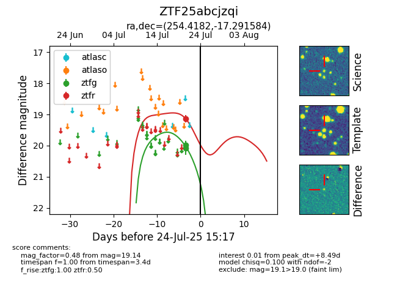

Target ZTF25abcjzqi at 2025-07-24 15:17, see:
FINK: fink-portal.org/ZTF25abcjzqi
Lasair: lasair-ztf.lsst.ac.uk/objects/ZTF25abcjzqi
ALeRCE: alerce.online/object/ZTF25abcjzqi
alt names
ZTF25abcjzqi (ztf,fink)
coordinates:
equatorial (ra, dec) = (254.4182,-17.29158)
galactic (l, b) = (3.5933,+15.61506)
photometry
last ztfg=19.99, ztfr=19.14
2 ztfg, 1 ztfr detections
